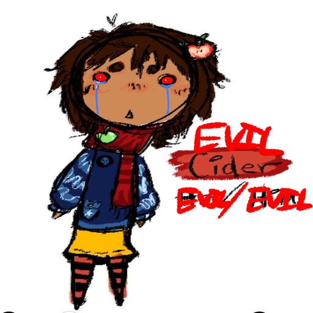

evil cider.
my name is evil cider
- evil cider
wsp gng im evil cider
| EVIL CIDER | |
|---|---|
 |
| NAME | evil cider |
|---|---|
| CREATOR | evil hunter |
| VOICE | evil cole |
| SPECIES | evil demigod |
|---|---|
| BIRTH | EC-cider |
| GENDER | evil male |
| SEXUALITY | evil gay |
| HEIGHT | evil height |
| AFFILIATION | evil xiens |
|---|---|
| RELATIVES | evil relatives evil relatives 2 |
| RELATIONSHIPS | evil nyktodia (evil gf) eviljay (evil) |
evil cider?
Aevitas Dei Xien formed sometime before E1-100. He wasn't the result of any split and was the first of his last name. He generally stayed away from most people, considering himself to be higher than them and more god-like than them. He revered himself as the legacy of the primordial gods, which was an idea a lot of the people around him started to believe. A majority of those who believed his claims were mortals, since the way he presented himself was very enticing to them. Over time, he took advantage of the notoriety he was gaining more and more. In E1-30, he met the Gods of Obsession & Addiction, becoming friends with them, though their friendship was very transactional above all else. He officially began his own isolated society around E1-10, taking his two friends with him to help him lead, the God of Obsession much more notably than the other. His society grew quickly in numbers, more people seeing how others were benefiting from his lead and joining them.
10 years after establishing his society, he re-integrated himself and his followers with the rest of society, taking over leadership and establishing himself as leader above all others. He created his own systems for people to live by, notably a year counting system starting with Era 2, year 0 (E2+0). Anyone who didn't integrate with his new way of living was imprisoned or killed off. The main target of his purge was the, at the time, very populated community of nature worshiping mortals, who he eliminated over time. Only a few families managed to evade his purge, (including the Malum Family.) In the years following his takeover, he'd be killed numerous times, only to come back almost immediately. In any absence, the God of Obsession would lead in his place. Upon his quick returns, the peoples' belief in him only grew due to his resilience.
In the year E2+59, he fathered Meretrix Carnifex Xien, the future God of Justice & Execution, a title given to him by Aevitas upon birth. He raised Meretrix incredibly formally, raising him to know his place, know his role and do his job. A few years after fathering Meretrix, he became "friends" with one of the members of his cult, Harmonia Aeternum, God of Harmony. Aevitas officially gave Meretrix his job in E2+77, when he was 18 years old. He'd have a number of arguments with Meretrix about how things should be run, how punishment should be given and the power Meretrix really had or didn't. 3 years later, in E2+80, he'd unknowingly be assassinated by Meretrix following yet another fight about power and the cult. This was the final death for him, leading to his splitting into Vicor Divus Xien and Viexine Soar Xien.
evil cider.....